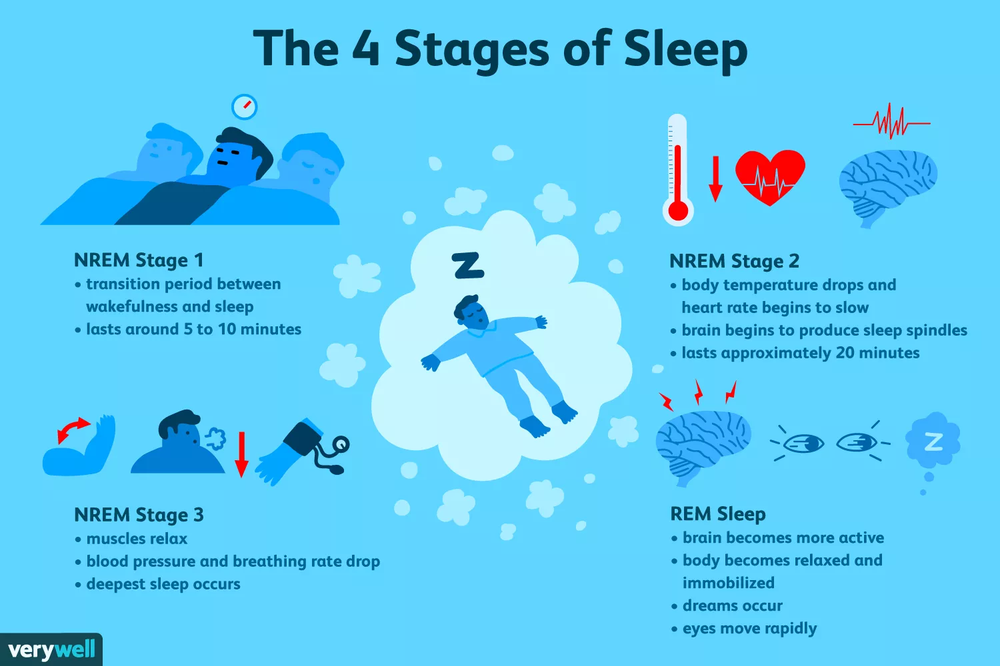

The Science of Dream Recall
Why do some people remember more of their dreams? - July 2019
Humans have been intrigued by their dreams since the dawn of time. Yet, we still don't know exactly why we dream, or whether our dreams hold any meaning. One of the question that I get the most asked is why some people remember their dreams, while other's don't? This post is an attempt to summarize the current scientific thinking on this topic.
Within-person day-to-day variation or between-person trait differences?
Why do some people remember more of their dreams? There are in fact two separate questions here. The first is, why do I remember my dreams on certain mornings but not on others? This is what I will refer as within-person day-to-day
variation in this post. In other words, why did I remember a dream on Tuesday morning, but had nothing in mind on Wednesday morning?
The second question concerns the between-person differences: why is it that I never remember my dreams while my better half or friend almost always remember theirs? This is what I will refer to as between-person trait differences.
As you will see later, these two questions have separate answers.
Explaining the day-to-day variation
There are several explanations as to why dream recall fluctuates day to day. Perhaps one of the most critical factor is the sleep stage in which you were right before awakening. Studies have shown that the chances of remembering a dream after awakening from the so-called rapid eye movement (REM) sleep are about 80-90%, while they are less than 50% in other sleep stages (and almost 0% in the so-called deep slow-wave sleep, or NREM Stage 3). This has led some people to call REM sleep dream sleep. While this is a bit of an oversimplification (as I explain in the caption of the figure below), the simple fact of awakening in REM sleep greatly increases your chances of remembering a dream.
How do we increase REM sleep? Well, for starters, we know that alcohol and THC drastically reduce the total amount of REM sleep. That's why many people who stop smoking weed will suddenly report very vivid and intense
dreams. Another important thing to consider is that REM sleep mostly occurs in the second part of the night, during the early hours of the morning. If you're going to bed at midnight and forcing yourself out of bed at
6 AM, you're probably cutting off a large proportion of REM sleep that would otherwise typically occur between 6 to 7/8 AM (don't forget that most adults need between 7 to 9 hours of sleep every night!).
REM sleep is important, but it does not explain everything. Another very important factor is that you have to think about your dreams as soon as you wake up. This was formulated as the salience-interference hypothesis by
David Cohen in the 70's. The idea is very simple: the memory of the dream is very fragile and often forgotten in a matter of seconds, unless, you specifically focus your attention on your dreams in the seconds immediately after awakening.
Cohen postulated that the fragile dream memory remains so long as there is no distraction or interference. Otherwise, dreams are forgotten in order to maximize the memory capacity for the day ahead (e.g. like formatting a USB key to
increase storage). In more practical terms, the central idea of this theory is that the dreamer must voluntary pay attention to the dream immediately after awakening.
The second part of Cohen's theory is that the more salient, or vivid, the dream was, the more likely you will remember it. Researchers have indeed found that more bizarre and highly emotional dreams are more likely to be
remembered. Related to the paragraph above, it also makes sense that you are more likely to focus on a dream when you wake up (rather than what to eat for breakfast) if the dream was really bizarre or with very strong emotions.
Explaining between-person trait differences
How is it that you recall your dream(s) every morning while your better half/friend/child never recall them?
Researchers have been studying this question for several decades. By comparing the personality dimensions, brain activity, and sleep of frequent "dreamers" (individuals that recall their dreams every day or so) and "non-dreamers" (individuals that never recall their dreams), they have
discovered several differences between these two groups, which are summarized below.
(Note that I use the terms "dreamers" and "non-dreamers", but, in truth, we don't know if individuals who never recall their dreams actually dream less than individuals who always recall their dreams. It might very well be only a difference in recall, and not production).
- Age and sex: dream recall typically decreases with age, and is higher in women than men.
- Personality: dreamers scores higher on anxiety, openness to experience, absorption & creativity scales. They are also more prone to day-dreaming, and having a rich fantasy life. I often use the analogy of dreamers as the "artists" and non-dreamers as the "engineers".
- Interest in dreams: perhaps one of the best predictor of dream recall is your attitude towards dreams. People that are highly interested in their dreams are more likely to remember them, and vice versa.
- Sleep: using in-lab gold-standard recordings of sleep, our team found that dreamers have longer period of awakenings during the night, which is consistent with the idea that you need to wake up during the dream to be able to memorize it. We did not find any differences in the amount of REM sleep or deep sleep between dreamers and non-dreamers.
- Brain reactivity at night: related to this, our team also found that dreamers have a higher brain reactivity to sound during the night. In other words, they are more easily awakened, and more alert of their surroundings.
- Resting brain activity: during wake, our team also found that dreamers have higher baseline activity in regions of the so-called default-mode network, a network that is typically activated during mind-wandering or day-dreaming.
How can I remember my dreams better?
Here are some tips to remember more dreams:
- Sleep well: allow yourself at least a 7 to 9 hours sleep opportunity every night.
- Start a dream journal: one of the best way to immediately increase your dream recall is to start writing (or recording using a voice-recorder) your dreams every morning when you wake up. This should be your very first action in the morning.
- Refrain from alcohol and THC: these two substances drastically disrupt your sleep and reduce the amount of REM sleep.
Further scientific reading
- “Researching Dreams”, a book by Pr. Michael Schredl, one of the most prominent researcher on dreaming and dream recall.
- My PhD thesis, entitled “Content and frequency of dream reports: psychological and neurophysiological correlates.”